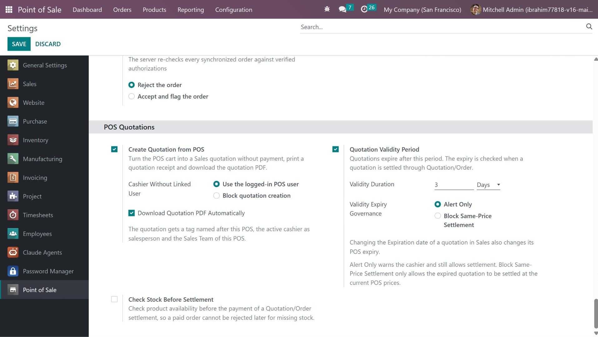
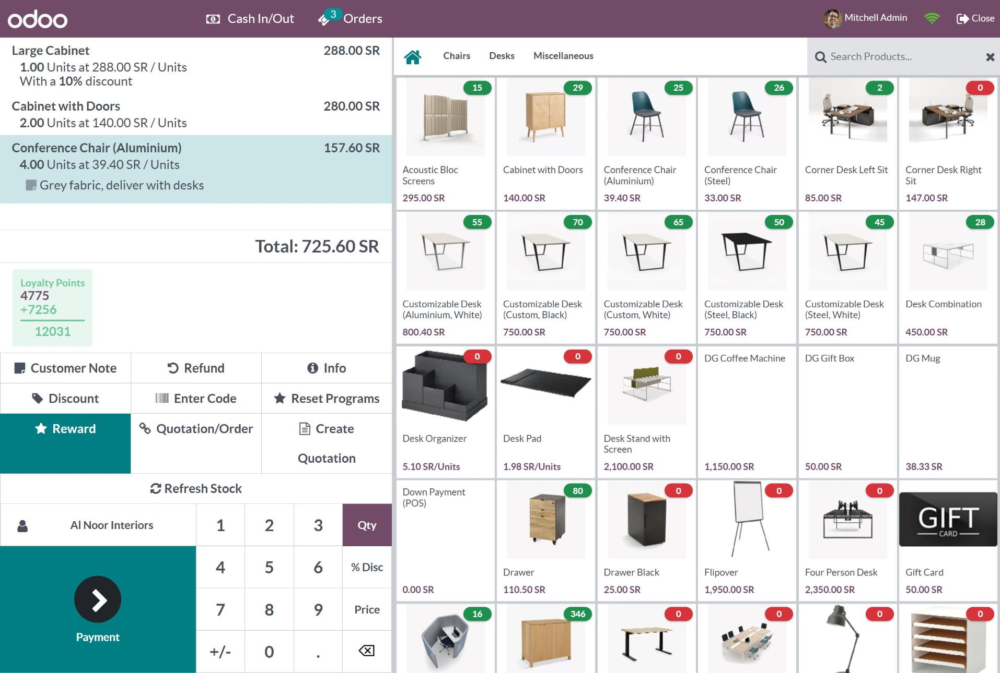
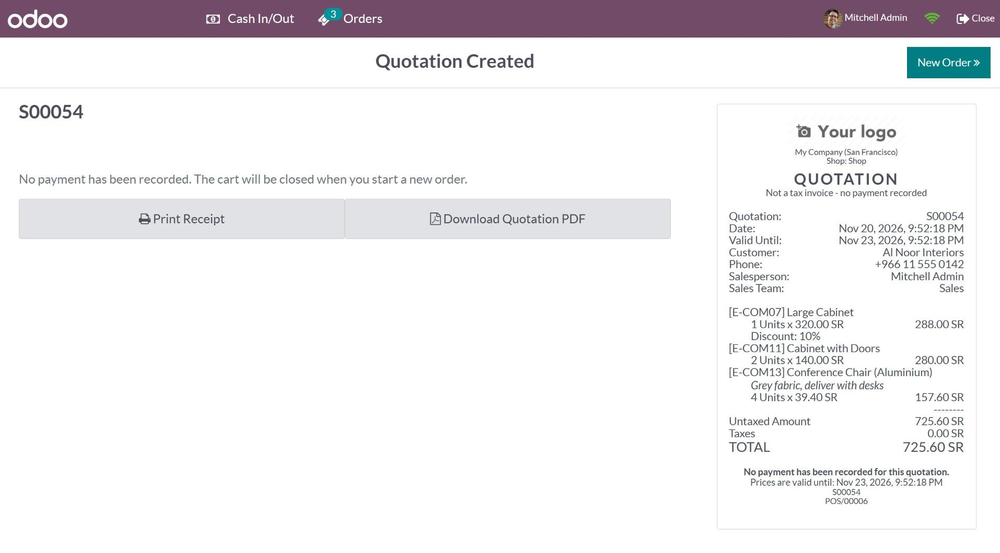
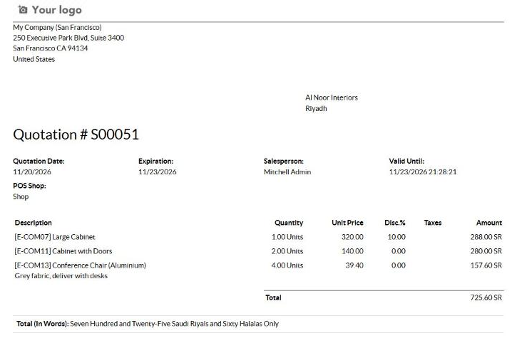
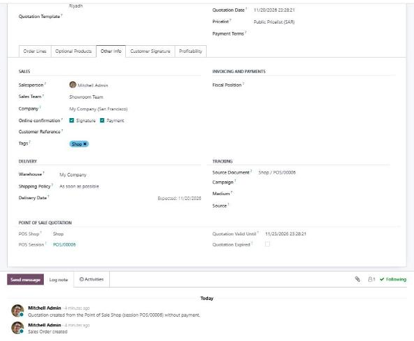
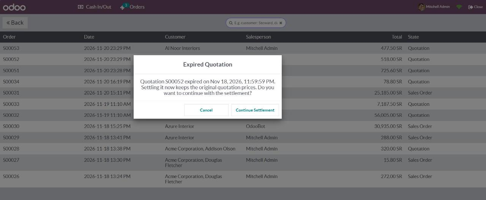
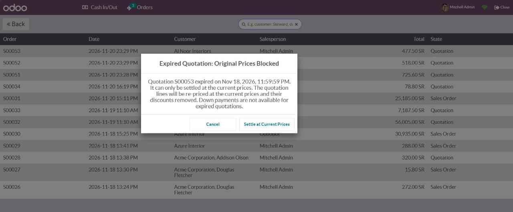
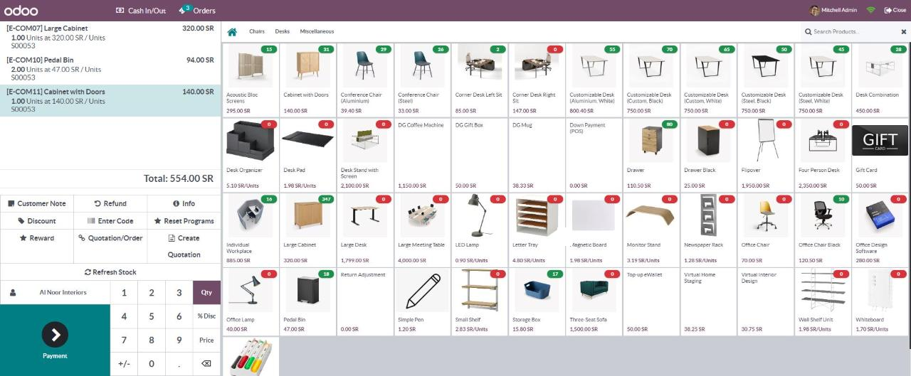
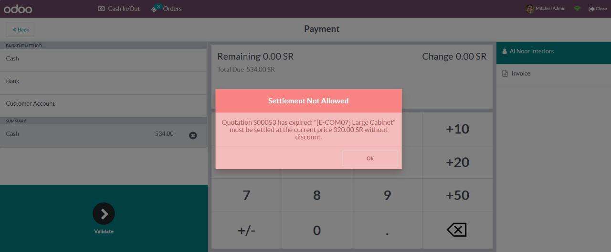
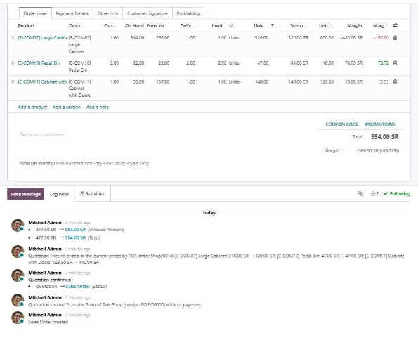

Turn a POS cart into a real Sales quotation in one click, with no payment, a printed quotation receipt and the quotation PDF. When the customer comes back, settle it through Quotation/Order, with a validity period that stops expired quotes from being sold at old prices.
Customers often ask the cashier for a price offer before they buy. Standard Odoo 16 can settle a Sales quotation in the POS, but it cannot create one from the POS, and it never checks how old the quoted prices are.
Four steps, all inside the POS.
Screenshots were taken on an Odoo 16 database with the furniture demo products, the Shop POS, a 3-day validity period and a demo customer (Al Noor Interiors).
Point of Sale › Configuration › Settings › POS Quotations. All options are off by default: Create Quotation from POS, Cashier Without Linked User (use the logged-in POS user, or block creation), Download Quotation PDF Automatically, Quotation Validity Period (duration in Hours or Days), Validity Expiry Governance and Check Stock Before Settlement.

The Create Quotation button sits with the product screen control buttons. If no customer is selected, the cashier is asked to pick one. Prices, discounts, manual prices and line notes are carried into a draft quotation in Sales. No POS order, payment or invoice is created. Clicking again on the same cart returns the same quotation instead of a duplicate.

The Quotation Created screen shows a POS receipt titled QUOTATION with the customer, salesperson, sales team, Valid Until, lines and totals, and no payment or change section. Print Receipt uses the POS printer; Download Quotation PDF gets the standard Sales quotation PDF, which also shows Valid Until and POS Shop. New Order closes the cart, and a converted cart can no longer be paid.


In the quotation’s Other Info tab: a Tags entry named after the shop (reused if it exists, in any letter case), the cashier’s linked user as Salesperson (employee login supported) and the shop’s Sales Team, and the Point of Sale Quotation block with POS Shop, POS Session, Quotation Valid Until and Quotation Expired. Use the Created from POS filter in Sales to list them.

When the cashier selects an expired quotation in Quotation/Order, an Expired Quotation popup shows the expiry date. Continue Settlement settles it at the original quotation prices, and the quotation history records that it was settled after expiry.

In Block mode the popup offers Settle at Current Prices. The current price is computed by the server with the quotation’s own pricelist and today’s product prices, so a price raised in the backend after the session opened is still applied. Discounts are removed and the down-payment choice is skipped.


If the cashier edits a re-priced line, the payment screen refuses it with Settlement Not Allowed and names the required price. The server’s verdict is stored on the cart when the quotation is loaded, so this check also works with no connection, before any cash is taken. The server applies the same rules again when the order syncs, and also refuses cancelled or already settled quotations.

After a re-priced settlement, the quotation lines take the collected prices, so the Sales total matches the POS payment. The chatter lists each change (old → new price) and the settling POS order.

What happens when a quotation is selected in Quotation/Order.
Each of these is handled in the code and covered by tests where it can be.
No new groups: the module relies on the standard Point of Sale and Sales access rights.
| Who | Can |
|---|---|
| Point of Sale Administrator | Configure POS Quotations settings per shop. |
| Point of Sale User | Create quotations from an open session of a shop where the feature is on, and download their PDF with the access token. |
| Sales users | See POS quotations like any other quotation; POS Session is visible to POS users only. |
| Multi-company | Quotations are created in the shop’s company; the salesperson must belong to it. |
| Odoo version | 16.0, Community and Enterprise |
| Depends on | pos_sale (pos_hr optional, for employee login) |
| Python dependency | None |
| POS screens | Create Quotation button, Quotation Created screen; extends Quotation/Order and the payment screen |
| Settings | Point of Sale › Configuration › Settings › POS Quotations |
| Models | Extends pos.config, res.config.settings, sale.order, sale.order.line, pos.order, pos.order.line, pos.session |
| Reports | Adds Valid Until and POS Shop to the standard quotation PDF |
| Automated tests | 20: creation and assignments, no payment, tag reuse, duplicates, input validation, salesperson fallback, PDF, validity stamping, Alert and Block modes, server-side current prices, quotation pricelist, Sales Expiration sync, cancelled/settled, stock check |
| Languages | English, Arabic |
| License | LGPL-3 |
Questions, a demo, or an adaptation to your own process? Get in touch.
✉ ibrahim.yahiah@gmail.com LinkedIn: Ibrahim YahiaAuthor: Ibrahim Yahia · License: LGPL-3